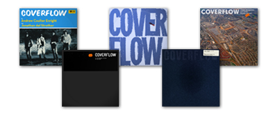

In the summer of 2005 I first read about the CoverFlow project, a colaboration between Andrew Coulter and Jonathan del Strother. The arcticle sounded very promising and so I was immediatly intrigued.
Andrew did a blog post in December 2004 describing his idea for a new way to go trough an iTunes digital music library. In what I would call a perfect colaboration Jonathan decided to write the application Andrew described. The result is simply astounding, and it's potential still remains to be discovered by many I believe. The idea of being able to visually and easily flip trough your album collection covers, in a way that's completly in sync with how we do it in real life, is just amazing.
As you might know I enjoy helping out project with potential (Camino, Adium, GNUstep) to ensure that their visual representation re-enforces the product as a whole. In the case of CoverFlow their wasn't any work needed on the prestine interface Andrew and Jonathan created, instead the application really lacked a very good application icon. So that's what I went and made for them.
Given the fact that it's just a tool enabling you to find things in a visual way, the icon needed a similar simple approach. It needed to be something that was as visually appealing and smart as the whole applications mataphor and interface. The descision to do the DJ record flight case was made quickly, mainly because that's where the project inspiration came from in the first place.
While working on the icon I came up with the idea to dynamically load the users currently playing albumm cover and composit it on the icon in the dock. It's a small detail but in the bigger picture it just lifts application to a whole new level of sophistication. This is something Jonathan is looking into, it's not yet implemeted sorry, but it should come soon.
Another nice detail is that while normally I do all the work on the icon, I invited Andrew to create all the album cover designs for the icon. Andrew is a graphic designer and so I thought it would be a nice idea to merge some of his work in the icon aswell. And I must say that I really like the way it turned out. Collaborations like these should happen more often.
I'd like to thank Jonathan and Andrew for creating such a wonrderfull application. And I would like to urge them to further develop it. I have the destinct feeling that this way of browsing visual instances is more powerfull then they thought.